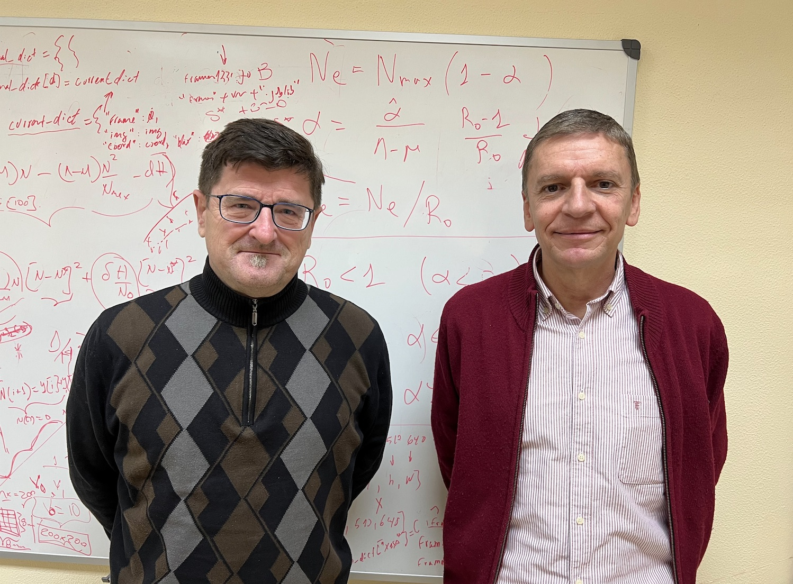
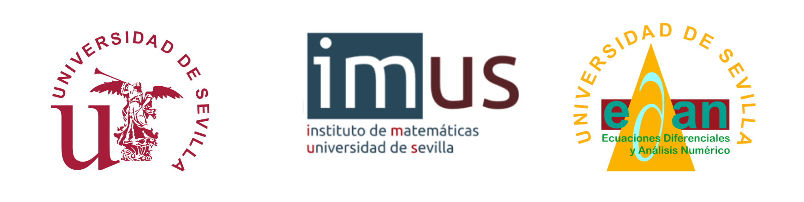

Nos congratulamos de que nuestro socio José Antonio Carrillo de la Plata ha sido galardonado con la medalla Echegaray 2022 por la Real Academia de Ciencias Exactas, Físicas y Naturales (RAC).
La Medalla Echegaray es el galardón científico más alto concedido por la Real Academia de Ciencias. Fue instituido a instancias de D. Santiago Ramón y Cajal en 1905, tras la concesión del Premio Nobel a D. José Echegaray. Desde la RAC, se reconoce una eminente trayectoria investigadora o una contribución científica de especial relevancia.
La concesión ha sido acordada en la sesión plenaria de la Corporación, celebrada el pasado mes de diciembre. Así la institución otorga a José Antonio Carrillo este reconocimiento, que adjudica cada dos años y es el galardón científico más antiguo reconocido en España.
En la propuesta de concesión, se destaca la calidad de la obra científica del Profesor Carrillo en matemática pura, que abarca desde las ecuaciones en derivadas parciales y campos afines, hasta diversas ramas de la ciencia aplicada. Sus investigaciones le han llevado a la obtención de diversos premios de relieve. La concesión de esta medalla responde a que José Antonio Carrillo es ya una referencia mundial en sus campos de estudio, con gran presencia en eventos, congresos, como el International Council for Industrial and Applied Mathematics (ICIAM) 2023, de ámbito mundial, y en instituciones europeas (European Mathemathics Society, European Academy of Sciences, Section Mathematics).
José Antonio Carrillo de la Plata fue nombrado recientemente Académico Extranjero de la RAC. Es doctor por la Universidad de Granada desde 1996 y desarrolla su carrera en el campo de las ecuaciones diferenciales de la física, en particular, en las ecuaciones de difusión no lineal, las ecuaciones cinéticas y el cálculo de variaciones. Destaca su notable dominio de técnicas novedosas y delicadas del análisis, motivadas en la física y las probabilidades. Desde 2004, ha sido sucesivamente profesor ICREA en Barcelona y desde 2012 es profesor del Imperial College de Londres. En los últimos años, sus contribuciones han sido fundamentales en ámbitos como la biología matemática, en sus vertientes teórica y computacional. Estos trabajos y su creciente renombre internacional, así como el extenso magisterio doctoral, le han promovido a la cátedra del Mathematical Institute de la Universidad de Oxford en Reino Unido, en 2020.
Desde estas líneas, felicitamos a José Antonio por tan alto reconocimiento a su labor científica.
La doctora de Ciencias Matemáticas y decana de la Facultad de Matemáticas en la Universidade de Santiago de Compostela, María Elena Vázquez Cendón, ha recibido el premio María Josefa Wonenburguer de 2022.
Se trata de una decisión que ha comunicado la Xunta de Galicia en el último pleno de la Unidade Muller e Ciencia de 2022, donde han tenido en cuenta la carrera de investigación y divulgación de la matemática.
El galardón, otorgado anualmente desde el año 2007, fue creado por la Xunta para distinguir a las mujeres de Galicia con trayectorias en los ámbitos de la ciencia y la tecnología, y pretende visibilizar y hacer llegar a la sociedad las contribuciones hechas por las mujeres gallegas a la ciencia y la tecnología.
Asimismo, cuenta con el compromiso del Gobierno gallego desde la Consellería de Promoción de Emprego e Igualdade y lleva el nombre de la investigadora y matemática gallega pionera y referente internacional.
La Xunta de Galicia ha alabado en esta línea la carrera de la doctora Vázquez Cendón, por sus contribuciones en el estudio de las leyes de balance hiperbólicas y por su compromiso con la divulgación, con su presencia al frente del Proyecto de Estímulo do Talento Matemático (Estalmat-Galicia) desde el año 2021.
El premio fue otorgado en un evento que tuvo lugar el pasado martes día 20 de diciembre en Santiago de Compostela.
¡Felicidades, Elena!

Nos es grato comunicaros que Juan Ignacio Montijano y Luis Rández han recibido la distinción «Honorary Fellowship» de la European Society of Computational Methods in Sciences and Engineering (ESCMSE).
La ESCMSE es una organización sin ánimo de lucro, cuyos principales objetivos son la construcción, el desarrollo y el análisis de métodos computaciones, numéricos y matemáticos y su aplicación en las Ciencias y la Ingeniería (para más información puede consultarse ESCMSE–European Society of Computational Methods in Sciences and Engineering).
Juan Ignacio Montijano y Luis Rández son catedráticos de la Universidad de Zaragoza y socios de la SEMA. Ambos tuvieron un papel muy relevante en la organización del CEDYA/CMA 2022. Además, Juan Ignacio fue el presidente de nuestra Sociedad durante el periodo 2004-2006.
¡Felicidades, Juan Ignacio y Luis!
Se puede encontrar más información en la noticia publicada por la Universidad de Zaragoza: Los matemáticos Juan Ignacio Montijano y Luis Rández, elegidos «Honorary Fellowship» de la European Society of Computational Methods in Sciences and Engineering | Universidad de Zaragoza (unizar.es).
La tesis seleccionada por la SEMA para optar a los ECCOMAS Awards for the Two Best PhD Theses in 2022 on Computational Methods in Applied Sciences and Engineering ha sido la defendida por el Dr. Alejandro Pastor Rodríguez titulada «Advanced observation correlation and orbit determination methods for the build-up and maintenance of a catalogue of space objects». La tesis, defendida en la Universidad Carlos III de Madrid y dirigida por los profesores Diego Escobar Antón y Manuel Sanjurjo Rivo, obtuvo la mención internacional, la mención de doctorado industrial, y la máxima calificación posible de sobresaliente cum laude.
En este trabajo se proponen métodos de correlación de observaciones y de determinación orbital para la elaboración y el mantenimiento de un catálogo de objetos espaciales. Los métodos presentados son útiles desde un punto de vista práctico, siendo cruciales para la sostenibilidad del entorno espacial y están siendo utilizados actualmente en empresas del sector aeronáutico.
El comité de selección ha reconocido un alto nivel científico en todos los trabajos presentados.
Desde la SEMA felicitamos al Dr. Alejandro Pastor, al igual que a sus directores.
Los galardonados con el premio ECCOMAS Awards for the Two Best PhD Theses in 2022 on Computational Methods in Applied Sciences and Engineering 2022 han sido Alice Cortinovis (Suiza), seleccionada por la sociedad Swiccomas, con la tesis «Fast deterministic and randomized algorithms for low-rank approximation, matrix functions, and trace estimation» y Tim Hageman (Reino Unido) seleccionado por la sociedad UKACM, con la tesis «Fracture scale fluid flow models for the simulation of poroelasticity».
Más información en el siguiente enlace.
Comunicación RSME
__________________
La Real Academia Galega de Ciencias (RAGC) celebró el 22 de marzo el ingreso de tres nuevos académicos correspondientes, entre ellos el de Francisco Marcellán Español, expresidente de la RSME y catedrático de la UC3M, que se incorpora a la sección de Matemáticas, Física y Ciencias de la Computación. El presidente de esta institución, Juan Lema, mostró su satisfacción por el ingreso de «tres científicos comprometidos con la ciencia y la sociedad, y con una magnífica proyección internacional en sus correspondientes campos» . En concreto, de Francisco Marcellán puso de relieve «su solidez científica en el desarrollo e implementación del sistema de ciencia y tecnología en España» .
La vicepresidenta primera de la RSME, Victoria Otero Espinar, acompañó al nuevo académico en su toma de posesión, que estuvo apadrinada por el también matemático Juan José Nieto Roig. En su discurso, Marcellán recordó su vinculación con la comunidad matemática gallega, tras su incorporación en 1981 como profesor en la ETSII de Vigo, entonces un centro adscrito a la USC, instituciones ambas a las que ha seguido vinculado con programas de doctorado, artículos conjuntos y otras actividades. Tras repasar sus áreas de investigación, Marcellán quiso reflexionar sobre la generación de conocimiento matemático y el compromiso con la sociedad en cuanto a la formación de jóvenes estudiantes, su implicación en la cultura o el desarrollo económico. También se refirió a la necesidad de dar reconocimiento y visibilidad a la comunidad científica y destacó el papel de las sociedades científicas como intelectual colectivo, para después poner su compromiso y experiencia al servicio de los objetivos de la RAGC.
Recientemente, se ha producido la renovación de los cargos de la junta directiva de la Confederación de Sociedades Científicas de España (COSCE).
Las elecciones tuvieron lugar el pasado 21 de marzo y han resultado elegidas Perla Wahnón Benarroch y Mª. Ángeles Serrano García como presidenta y secretaria general, respectivamente; Alicia Alonso Izquierdo, como vicepresidenta; María Rut Jiménez Liso como vocal en representación de la Vocalía 1; Francisco Marcellán Español, expresidente de la RSME y socio de la SEMA al frente de la Vocalía 2 (área de Matemáticas, Física y Tecnologías físicas, y Química y Tecnologías químicas), y Carmen Fenoll Comes como vocal en representación de la Vocalía 4.
La toma de posesión de los nuevos miembros se realizará en el marco del acto de la entrega del Premio COSCE a la Difusión de la Ciencia, el próximo 13 de junio.
Desde la SEMA felicitamos a Francisco Marcellán Español por su elección y por su ingreso en la Real Academia Galega de Ciencias.
Este catedrático argentino, nacionalizado también estadounidense, recibe el premio Abel de matemáticas por sus contribuciones fundamentales en ecuaciones en derivadas parciales. Sus soluciones han resuelto problemas en interfaces sólido-líquido, como del agua al hielo, y de matemática financiera.
La Academia Noruega de Ciencias y Letras otorgó el pasado 9 de marzo a Luis Ángel Caffarelli (Argentina, 1948), catedrático de la Universidad de Texas en Austin (EE.UU.), el premio Abel, al que a menudo se equipara con un nobel de matemáticas.
El jurado ha destacado sus importantes aportaciones en el ámbito de las ecuaciones en derivadas parciales. En concreto, «por sus contribuciones fundamentales a la teoría de la regularidad de las ecuaciones no lineales en derivadas parciales, incluyendo los problemas de frontera libre y la ecuación de Monge-Ampère» .
Las ecuaciones en derivadas son herramientas que los científicos utilizan para predecir el comportamiento del mundo físico. Estas ecuaciones relacionan una o varias funciones desconocidas y sus derivadas. Las funciones suelen representar magnitudes físicas, las derivadas sus tasas de variación y la ecuación diferencial define una relación entre ambas. Estas relaciones son habituales; por ello, las ecuaciones diferenciales desempeñan un papel destacado en muchas disciplinas, como la ingeniería, la física, la economía y la biología.
Las ecuaciones en derivadas parciales surgen de forma natural como leyes de la naturaleza, para describir fenómenos tan diferentes como el flujo del agua o el crecimiento de las poblaciones. Estas ecuaciones han sido fuente constante de intenso estudio desde los tiempos de Isaac Newton y Gottfried Leibniz. Sin embargo, a pesar de los considerables esfuerzos realizados por numerosos matemáticos a lo largo de los siglos, siguen sin resolverse cuestiones fundamentales relativas a la existencia, unicidad, regularidad y estabilidad de las soluciones de algunas de las ecuaciones clave.
Pocos matemáticos vivos han contribuido más a nuestra comprensión de las ecuaciones en derivadas parciales que el argentino-estadounidense Luis Caffarelli. Ha introducido técnicas nuevas e ingeniosas, ha demostrado una brillante perspicacia geométrica y ha producido muchos resultados fundamentales. A lo largo de más de cuarenta años, ha realizado aportaciones revolucionarias a la teoría de la regularidad. La regularidad —o suavidad— de las soluciones es esencial en los cálculos numéricos, y la ausencia de regularidad es una medida de lo salvaje que puede comportarse la naturaleza.
«Los teoremas de Caffarelli han cambiado radicalmente nuestra comprensión de clases de ecuaciones en derivadas parciales no lineales con amplias aplicaciones. Los resultados son técnicamente virtuosos y abarcan muchas áreas diferentes de las matemáticas y sus aplicaciones» , afirma el presidente del Comité Abel, Helge Holden.
Gran parte del trabajo de Luis Caffarelli se refiere a problemas de frontera libre. Consideremos, por ejemplo, el problema de la fusión del hielo en el agua. En este caso, el límite libre es la interfaz entre el agua y el hielo; forma parte de la incógnita que hay que determinar. Otro ejemplo es la filtración de agua a través de un medio poroso: también en este caso hay que conocer la interfaz entre el agua y el medio. Caffarelli ha dado soluciones penetrantes a estos problemas con aplicaciones a interfaces sólido-líquido, flujos en chorro y cavitacionales, y flujos de gas y líquido en medios porosos, así como a las matemáticas financieras.
Caffarelli es un matemático excepcionalmente prolífico, con más de 130 colaboradores y más de 30 estudiantes de doctorado a lo largo de 50 años. «Combinando una brillante visión geométrica con ingeniosas herramientas y métodos analíticos, ha tenido y sigue teniendo un enorme impacto en este campo» , afirma Helge Holden.
Luis A. Caffarelli ha recibido numerosos premios, entre ellos el Leroy P. Steele Prize for Lifetime Achievement in Mathematics, el Wolf Prize y el Shaw Prize.
Fuente: Academia Noruega de las Ciencias y las Letras/SINC.
El máster en Matemática Industrial (M2i) impartido por las universidades gallegas de Santiago de Compostela, Vigo y Coruña, y dos de Madrid, la Complutense y la Politécnica es reconocido por la Xunta de Galicia como Máster de Excelencia.
Este sello fue instaurado en el 2020, tiene una vigencia de cinco años, renovable, y se otorga a través de convocatorias en concurrencia competitiva.
Para la concesión del sello se tuvieron en cuenta los criterios de evaluación establecidos, que incluyen aspectos generales del máster como la tasa de ocupación, entidades públicas y privadas que colaboren directamente con el máster, procedimiento de selección del alumnado, porcentaje de alumnado extranjero y la existencia de tutorización y mentorización individuales.
Otros aspectos que se tuvieron en cuenta fueron los resultados del máster (encuestas de satisfacción, seguimiento de los egresados en el mercado laboral, etc.), la estrategia (visión, misión y desarrollo futuro del máster), el plan de gestión para los cinco próximos años académicos y las mejoras previstas en caso de obtener esta mención, el plan de estudios (porcentaje de prácticas en el plan de estudios, créditos dedicados a las prácticas obligatorias en empresas y empleo de metodologías docentes innovadoras), el profesorado o las estrategias de emprendimiento.
En palabras del consejero de Educación, la mención de Máster Universitario Excelente de la Xunta de Galicia acredita el nivel académico y la solvencia científico-técnica de los estudios que consiguen este reconocimiento y supone una garantía de futuro para los estudiantes.
El Comité encargado de otorgar el Premio SEMA «Antonio Valle» al Joven Investigador 2023 ha fallado el premio de esta convocatoria. En esta ocasión, el galardonado ha sido Xavier Fernández-Real Girona.
El Comité desea poner en valor el resto de candidaturas presentadas debido a la alta calidad de los trabajos de los aspirantes, animándolos a presentar de nuevo su candidatura en próximas ediciones.
Xavier Fernández-Real se graduó en Matemáticas y en Ingeniería Física en la Universidad Politécnica de Cataluña en 2014 y obtuvo el título de máster en Matemáticas Avanzadas en la Universidad de Cambridge en 2015.
En 2020 se doctoró en Matemáticas en el Swiss Federal Institute of Technology de Zúrich (ETH Zurich), con la tesis titulada Regularity Theory for Thin Obstacle Problems bajo la dirección de Alessio Figalli.
Desde septiembre de 2023 Xavier es SNF Ambizione Fellow en l’École Polytechnique Fédérale de Lausana (EPFL).
A pesar de su juventud ha obtenido numerosos reconocimientos y premios de investigación, entre otros destacamos el Dimitris N. Chorafas Prize 2021 (ETH Zurich) y el premio Vicent Caselles 2021 que anualmente concede la Real Sociedad Matemática Española en colaboración con la Fundación BBVA.
El trabajo de Xavier Fernández-Real gira alrededor de las ecuaciones en derivadas parciales elípticas y parabólicas. Ha realizado aportaciones notables en problemas de frontera libre, ecuaciones integro-diferenciales y ecuaciones de transporte. Su investigación está fuertemente motivada por aplicaciones del mundo real y, en particular, por los problemas que surgen en diversos modelos en física, finanzas y biología. Son relevantes los resultados en problemas de obstáculos sin fórmulas de monotonía, estudiando la regularidad de las soluciones del problema de Signorini con operadores no lineales, estableciendo por primera vez un resultado no condicionado a la regularidad de la solución (con M. Colombo y X. Ros-Otón).
Xavier Fernández-Real ha publicado numerosos artículos en prestigiosas revistas internacionales, tanto de forma individual como en colaboración con matemáticos de primera línea, y ha escrito dos libros especializados sobre su ámbito de trabajo. Es de destacar la diversidad de técnicas empleadas en sus trabajos. Además, ha mostrado gran independencia al publicar varios trabajos en solitario.
La combinación de contribuciones analíticas y de modelización matemática de alto nivel indica la amplitud de intereses y relevancia científica internacional del galardonado.
Sevilla, Marzo 27-29, 2023 (España)
http://departamento.us.es/edan/CRF23/

En las fechas del 27 al 29 de marzo de 2023 en el Instituto de Matemáticas de la Universidad de Sevilla se ha celebrado el Workshop Control and Related Fields. La temática principal del workshop se ha centrado en la teoría del control y campos afines: problemas de identificación y técnica de dispersión inversa, problemas de control óptimo, así como problemas de estabilización en ingeniería y métodos numéricos para problemas de control y problemas inversos.
Este evento ha reunido a investigadores internacionales (jóvenes y senior) del campo de la teoría de control. El objetivo de este evento ha sido ofrecer una visión amplia de este campo apasionante y poner de manifiesto su rápida evolución, así como facilitar el intercambio de ideas sobre los avances recientes en sus diversos aspectos.
Además, de las conferencias plenarias con ponentes senior (charlas de 50 minutos) y junior (charlas de 25 minutos) ha tenido lugar una sesión de pósteres.
J. Apraiz (Universidad del País Vasco, Spain).
A. Benabdallah (Aix-Marseille University, France).
A. Benaissa (Djillali Liabes University, Algeria).
I. Boussaada (Paris-Saclay University, France).
C. Castro (Universidad Politécnica de Madrid, Spain).
A. Doubova (Universidad de Sevilla, Spain).
E. Fernández-Cara (Universidad de Sevilla, Spain).
F. Macià (Universidad Politécnica de Madrid, Spain).
C. Pignotti (Università dell’Aquila, Italy).
L. Robbiano (Paris-Saclay University, France).
M. Sepúlveda (Universidad de Concepción, Chile).
F. Triki (Grenoble Alpes University, France).
Z. Abdallah (Lebanese University, Lebanon).
J.A. Bárcena-Petisco (Universidad del País Vasco, Spain).
M. Ben Said (University of Monastir, Tunisia).
D. A. de Souza (Universidad de Sevilla, Spain).
K. Le Balc’h (Sorbonne Université, France).
I. Marín-Gayte (Universidade de Lisboa, Portugal).
S. Marx (Nantes Université, France).
W. Zouhair (Cadi Ayyad University, Morocco).
Mariano Mateos
Departamento de Matemáticas, Universidad de Oviedo
El pasado sábado 20 de mayo tuvo lugar en Gijón la final de la fase asturiana de la Olimpiada Matemática de la ESO, organizada por la Sociedad Asturiana de Educación Matemática Agustin de Pedrayes, SADEM. A lo largo de todo el día, 64 alumnos procedentes de diferentes localidades de la región participaron en las pruebas preparadas por los miembros de la SADEM encargados de la organización del evento.
En esta ocasión, a las ya tradicionales pruebas de relevos, yincana y prueba individual, se unió una actividad de divulgación patrocinada por la SEMA y que llevó a cabo nuestra compañera Isabel Cordero-Carrión, de la Universidad de Valencia, dentro del proyecto de divulgación organizado por la SEMA Aplicaciones de las Matemáticas en la Sociedad de Hoy (APLIMAT).
La actividad presentada por Isabel, Matemáticas para Codificar el Universo, se basa en su experiencia como investigadora del proyecto europeo Virgo para la detección directa de ondas gravitacionales.
En la primera parte de la actividad, introduce algunos aspectos de la relatividad general en términos entendibles para alumnos de la ESO. A lo largo de la charla destaca todas las matemáticas necesarias para abordar la labor de detectar ondas gravitacionales, procurando relacionarlas con las matemáticas que ellos conocen. Además de mostrar simulaciones numéricas usadas en el proyecto, Isabel viajó desde Valencia con un pequeño interferómetro de Michelson, del tamaño de una caja de zapatos, capaz de medir diferencias de longitud del orden de decenas de nanómetros, y al que todos los participantes pudieron acercarse para ver cómo variaba el patrón de interferencia ante la más mínima perturbación (figura 15).
En la segunda parte, Isabel les pide que se conviertan en cazadores de ondas gravitacionales mediante la aplicación web GWitchHunters (Cazadores de Ondas, en inglés). Los chicos y las chicas pasan a ser protagonistas de la actividad y aprenden a clasificar ruidos a partir de un espectrograma.
La experiencia resultó tremendamente positiva. Todos los alumnos se mostraron participativos y tanto el grupo de los mayores como el de los pequeños, pudieron apreciar el valor de la matemática aplicada en algunos de los grandes retos que se plantea la sociedad de cara al futuro.
Título: High-order well-balanced finite volume methods for hyperbolic systems of balance laws.
Doctorando: Irene Gómez Bueno.
Directores: Manuel Jesús Castro Díaz y Carlos Parés Madroñal.
Centro: Departamento de Análisis Matemático, Estadísica e Investigación Operativa y Matemática Aplicada. Universidad de Málaga.
Defensa: 19 de diciembre de 2022.
Calificación: Sobresaliente cum Laude con mención internacional
Esta tesis, realizada por compendio de publicaciones, se sitúa en el contexto de la resolución numérica de sistemas hiperbólicos de leyes de equilibrio. Se consideran métodos de volúmenes finitos de alto orden basados en operadores de reconstrucción y en un flujo numérico robusto de primer orden. Dado que estos sistemas presentan soluciones estacionarias no triviales, es importante que el método numérico preserve las soluciones estacionarias, o al menos las de cierta familia relevante: dichos métodos se conocen como bien equilibrados (well-balanced).
Previamente a esta tesis, se propuso un procedimiento general para obtener métodos numéricos de alto orden bien equilibrados para sistemas de leyes de equilibrio unidimensionales basado en operadores de reconstrucción bien equilibrados, proponiendo una metodología para obtener un operador bien equilibrado a partir de uno que no lo es que requiere encontrar soluciones estacionarias cuyo promedio coincide con un valor dado. Esta estrategia ha sido aplicada con éxito para obtener esquemas bien equilibrados para los que se dispone de una expresión explícita o implícita de dichas soluciones.
El objetivo de esta tesis es el desarrollo de métodos numéricos generales de tipo volúmenes finitos explícitos, semiimplícitos e implícitos bien equilibrados, se disponga o no de la expresión de las soluciones estacionarias. En esta tesis se proponen diferentes estrategias para aproximar las soluciones estacionarias locales mediante la interpretación del problema de valor promedio a resolver en el proceso de reconstrucción, como un problema de control, o mediante la aplicación de métodos Runge-Kutta de colocación. Además, se presenta un procedimiento general para tratar los casos resonantes.
También abordamos el diseño de esquemas implícitos y semiimplícitos combinando la estrategia desarrollada previamente con la aplicación de esquemas de tipo RK implícito o IMEX.
Finalmente se presentan numerosas aplicaciones de los métodos desarrollados a problemas interesantes que involucran leyes de equilibrio unidimensionales hiperbólicas no lineales, como la aproximación del sistema de aguas someras con batimetría arbitraria y términos de fricción o las ecuaciones de Euler para fluidos compresibles con potencial gravitatorio.